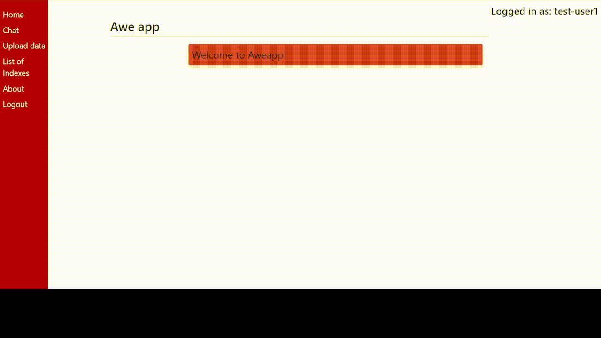
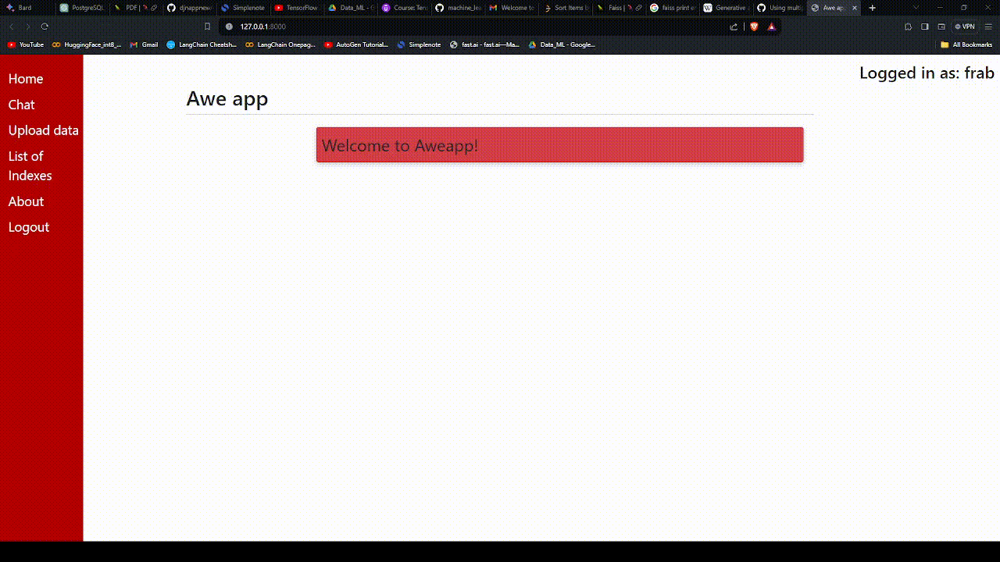

Django Web App (Awe App)
A next-generation web application powered by Django featuring a personalized workspace, intuitive chat interface, and multiple upload options (PDF, CSV, Text). It utilizes Faiss for custom user index storage and semantic prompt generation.
View Repository